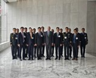
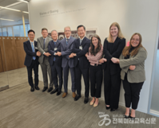
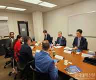
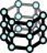
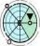
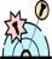
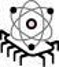
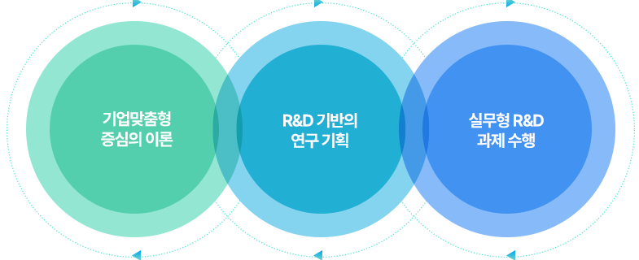

군사전략 / 방산획득 / 방산정책 / 방산경영경제 / 체계공학
Graduate Program
교육과정 / 대학원 과정
첨단AI방위산업융합학과는 기업 니즈와 실무형 R&D 역량을 연결해 방위산업 현장 중심의 석사급 인재를 양성합니다.
Global Program
방산획득정책 및 10대 국방전략기술 맞춤형 글로벌 대학원 과정 운영
글로벌 학위과정 운영



2026년 내 Purdue-JBNU 복수 석사학위과정(Dual Degree) 개설 추진
10대 국방전략기술




3개 전공 Track
첨단소재 / 센서 / 에너지 / 추진 / 유무인복합 / WMD 대응
사이버보안 / 인공지능 / 우주 / 양자 / UAM
Curriculum
기업 맞춤·실무형 인재 육성 개념 및 단계
교육과정 운영
기업 니즈에 부합하고 실무 역량을 갖춘 인재를 육성하기 위하여 ① 이론 교육, ② R&BD 교육 기획 실무, ③ 실무형 R&D 과제 수행의 3가지 내용을 핵심으로 교육과정 운영

실무·맞춤형 인재 육성을 위하여, 이론 교육 최소화
학과의 전공필수 교과목 최소화하여 운영
다양한 학과의 교과목을 전공선택으로 이수 가능하도록 개편(Cross-Listing)
[학년 1~2학기] 동안 R&D 기획 교과목 운영(기술사업화 역량 향상)
기업의 니즈를 기반으로 시장성, 제품의 성공가능성 등에 대한평가
시장 성공을 위한 필요기술 정의
필요기술과 교수진의 연구 성과 등을 고려한 R&D 추진전략수립
2학년 1~2학기 동안 기업체에서 실무 연수 및 R&D 수행
주 3일 이상 기업체 연구, 2일 대학 실험실에서 연구 수행
학생이 기업과 대학의 연구 가교 역할 수행
첨단AI방위산업융합학과
홈페이지 바로가기
대학원 공식 홈페이지에서 자세한 안내를 확인할 수 있습니다.
Credits
이수 학점 구성
대학의 졸업 요건에 부합하면서, 실무형 교육을 중심으로 이수 학점 설정
· 전북대학교 규정: (석사) 전공교과목(24학점), 논문연구(6학점) 이수 필요(총 30학점 이수 필요)
· 전북대학교 규정: (석사) 2년(4학기)의 최소 등록 연한을 가지고 있음
| 구분 | 필수 | 선택 | 계 | 비고 |
|---|---|---|---|---|
| 이론 교과목 | 1과목 (3학점) | 3과목 (9학점) | 4과목 (12학점) | 기초, 심화 이론 |
| R&BD 기획 | 2과목 (6학점) | 2과목 (6학점) | 기술사업화 역량 | |
| 현장실습 | 2과목 (6학점) | 2과목 (6학점) | 실무 역량 | |
| 논문연구 | 2과목 (6학점) | 2과목 (6학점) | 연구/실무 역량 | |
| 계 | 7과목 (21학점) | 3과목 (9학점) | 10과목 (30학점) |
개설과목
방산 획득 정책 및 전략, 첨단방산기술융합개론, 사이버보안개론, 융합적로봇공학개론, 군사전략과 국방정책, 방산소재개론Ⅰ, 고급 전달현상, 첨단방산융합세미나, 방산 수출 및 경영 전략, AI 사이버보안, 로봇 비전 및 센싱, 무기체계의 원리, 방산소재개론Ⅱ